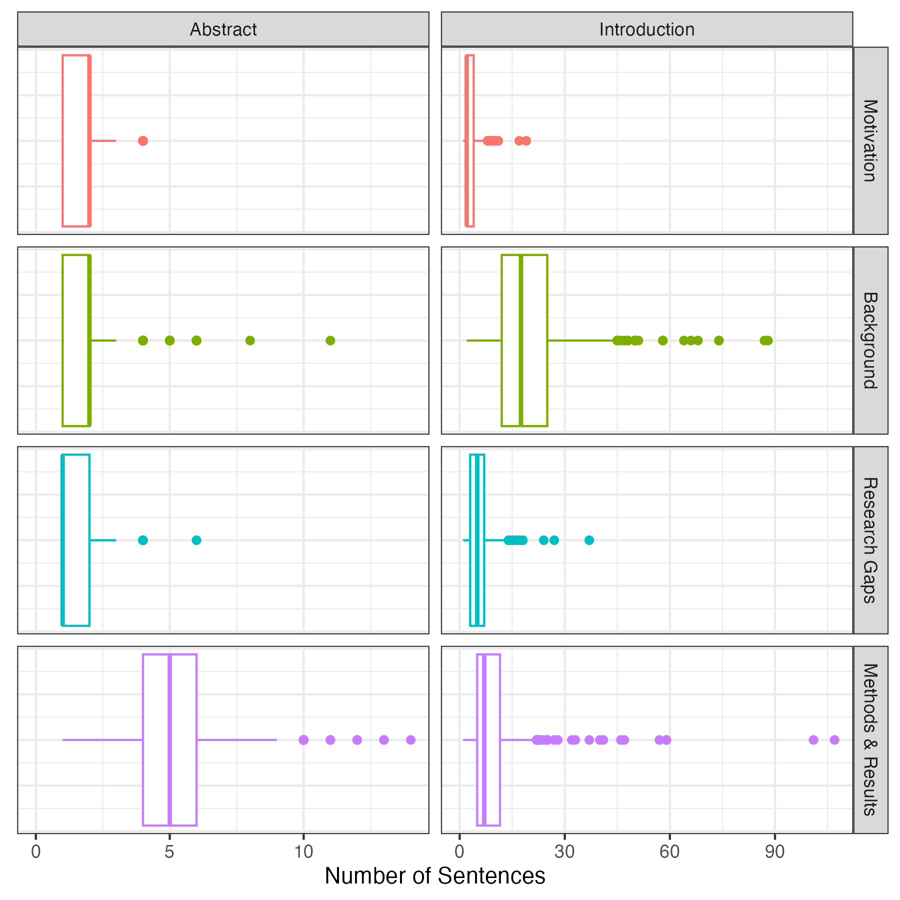

Academic journals require research articles to follow a specific format. First, a 150-300 word abstract provides a big-picture overview of the main ideas contained within the paper. Following the abstract is a longer introduction. This section serves multiple purposes, including explaining the motivations behind the research, summarizing past results in the field, identifying key gaps in the literature, and providing an overview of key methods and results. After the introduction, most research articles have dedicated methods, results, discussion, and conclusion sections. However, these sections are often renamed, split up, or removed entirely to better suit the paper.
Since the abstract and introduction are central to all journal articles, understanding how to write these sections effectively is an essential skill for researchers. However, advice on paper writing is often general and unclear. While recommendations like “start broad and then gradually get narrower” or “make sure to emphasize the importance of your research” aren’t bad advice, there’s much more nuance in an excellent paper. Today, I outline a data-driven framework for writing abstracts and introductions for research articles. To do this, I analyzed 500 papers from the PLOS Computational Biology journal using the open source LLM Llama 3.2.
Web Scraping
This project required abstracts and introductions from many academic papers. Getting a bunch of abstracts is straightforward, the arXiv Dataset contains millions of them. However, sourcing the introductions from these papers is much harder. My first idea was to feed the full-text PDFs from the arXiv dataset directly into the LLM. However, even state-of-the-art models like ChatGPT 4o struggled to differentiate between the various sections in the research articles. I’m not entirely sure why this task is so difficult, but I think it might have something to do with the two-column formatting in many academic journals or the weird placement of figures throughout the text. I needed a better solution.
Luckily, most journals publish research articles on the internet in a relatively consistent format. This makes it possible to build a web scraper to automatically extract papers from the publisher’s website. But web scraping is a tedious and annoying task. Small changes between web pages can completely break your scraper, and you’re constantly running the risk of getting your IP permanently banned for making too many requests. Many journals have their articles locked behind paywalls, which adds a layer of complexity I wasn’t equipped to deal with. To keep things as simple as possible, I extracted papers from a single open-source journal1, PLOS Computational Biology. To build the web scraper, I used the Python library beautifulsoup4. After six hours of scraping, I managed to wrangle all 9,653 abstracts and introductions from PLOS Computational Biology into a .json file. Now I was ready to categorize.
Sentence Categorization
After gathering the data, I ran each abstract and introduction through the Llama 3.2 90B text-preview model to categorize the sentences. I was hoping to use the 1B and 3B models which are small enough to run on my laptop, but unfortunately, they weren’t giving me accurate results. Since I don’t own a massive stack of GPUs, I used Groq to run the categorization job in the cloud. With their free plan, I got access to 500,000 tokens of chat completions per day. This was enough to categorize the abstracts and introductions from about 150 papers each night2. Since doing all 9,653 papers would have taken months, I opted to analyze the 500 most recent papers instead. This was still a big job. In total, the LLM analyzed over 20,000 sentences with over 300,000 words. The prompt I used is shown below:
Here are four categories for classifying the sentences of a scientific paper. Make sure that you correctly divide the text into sentences. Remember that abbreviations like “et al.” do not constitute the end of a sentence. However, all sentences must end with a period or question mark.
CATEGORY 1: Motivation for the research in a broad context. This type of sentence helps the reader to understand why the research is relevant, useful, and interesting.
CATEGORY 2: Past research in the field, which may be experimental or theoretical. Sentences in this category may also describe the results of previous research efforts.
CATEGORY 3: Descriptions of topics that remain poorly understood or descriptions of gaps in the literature that need to be filled.
CATEGORY 4: The methods used by the authors in this research paper. Sentences in this category may also discuss the results of this research paper.
A sentence can only belong to one category. Use the context of the paragraph to determine whether a sentence is discussing the research paper itself or a previous study. Your response should be a JSON object in the following format:
{ "abstract": [ { "sentence": ..., "position": ..., "category": ..., }, ... ], "introduction": [ { "sentence": ..., "position": ..., "category": ..., }, ... ] }The “sentence” field must contain the exact sentence that was classified. The “position” is the relative position of the sentence in the text (i.e. 1 for the first sentence, 2 for the second sentence, etc.). The “category” should be 1, 2, 3, or 4. Now, I will provide you with an abstract followed by an introduction. Classify each of the sentences. Ensure that the first object in the “abstract” and “introduction” fields have a position of 1.
Results

Conclusions
A standard abstract in PLOS Computational Biology has two sentences of motivation, followed by 2-3 sentences explaining background information and the research gap the authors intend to fill. The rest of the abstract summarizes the methods and results used in the paper. A standard introduction contains a few sentences of motivation, followed by 20-30 sentences (3-4 paragraphs) explaining relevant background information and discussing the research gaps. This is followed by 4-5 sentences (1 paragraph) summarizing the paper’s methods and results3.
I suspect that the structure of academic papers varies between disciplines, so I’m not sure how generalizable these results are. However, you can find all the code I used on my Github if you would like to try this on a different journal. I also included the abstracts and introductions (~9,000 entries) and the categorized sentences from the 500 papers I analyzed (~20,000 entries) if you’d like to see the data for yourself. Thanks for reading!
Acknowledgment
I would like to thank Prof. Eric Cytrynbaum for providing the idea for this project.
Footnotes
I picked computational biology over another PLOS journal because its closest to my own research interests. Hopefully, the results of this analysis will come in handy if I ever manage to write a paper!↩︎
While I was running my classification jobs through Groq, I stumbled across the hilariously named and immensely practical
caffeinatecommand, which allows you to prevent your computer from sleeping until a specified process completes.↩︎For the data anlysis component of this project I tried using the tidyverse for the first time, and it was great! The entire data processing pipeline is just so idiomatic and simple. And
ggplot2definitely outshines bothmatplotlibandplotly. It doesn’t seem like R is very fast or scaleable, but I’ll definitely be using it for EDA and plotting from now on.↩︎